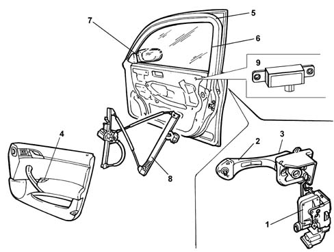

FRONT DOORS
- Path
- Descriptions > 70 FITTINGS > 7005 PASSENGER COMPARTMENT FRONT SIDE DOORS > FRONT DOORS
- Kind
- system description
- Applies to
- all engines; all production periods
- Interactive page
- https://sloeber94.github.io/elrnDB-lThss/en/#/172077
Applies to: all engines; all production periods
CONSTRUCTION SPECIFICATIONS
Fastened securely to the bodyshell, the doors make an important contribution towards both frontal and side impacts.
They have been strengthened by a waist level crossmember which has the function of stabilizing the doors in the case of frontal impacts, preventing them from opening accidentally during the impact, at the same time guaranteeing easy opening after the impact.
Their behaviour during side impacts has been improved by high-resistance tubular steel bars.

- 1 - Lock
- 2 - Outer handle with micro
- 3 - Manual button
- 4 - Control panel (NPP)
- 5 - Wind trim
- 6 - Seal
- 7 - Rear view mirror with courtesy light
- 8 - Window opening device
- 9 - Passive entry aerial
Window opening devices
The vehicle is equipped with electric windows operated by a drive cable. The switch for operating the window is located in the armrest on each door; in particular, there are switches for operating the electric windows for all four doors on the left front armrest and the switch for activating/excluding the rear electric windows with a signalling LED.
All the electric window control buttons are recessed to prevent them from being activated accidentally.
The front windows (driver and passenger) are equipped with an automatic function for opening and closing them.
Anti-theft windows are available as an optional extra: they are side windows made from two sheets of glass with a film of plastic material in between.
These windows offer the following advantages:
- they prevent injury in the case of an accident because they do not produce splinters like the glass used in normal windows;
- they guarantee good resistance to attempts to break into the vehicle;
- in the case of small impacts from the outside (such as, for example, stone chipping) only the outside layer of glass breaks, guaranteeing the full functioning of the window.
Seals
The door seals have been designed to ensure a perfect seal against wind resistance.
Traditional door housing seal;
Wind seal on the entire perimeter of the door housing;
Additional seal on the door frame which, together with the door housing seal, produces a perfect seal against wind resistance.
There is a special safety sensor on the window guide seal for each door which guarantees the reversal of the movement of the window each time something is placed between the window and the actual seal.